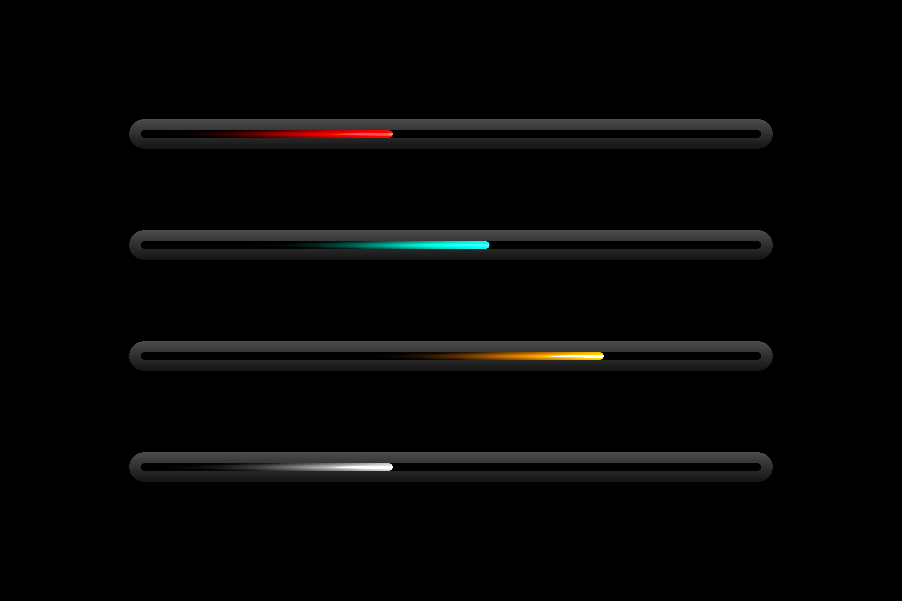

Тренды UI в 2026 году: Что ожидать?
Тренды UI в 2026 году: Прогнозы и ожидания.
📈 В мире веб-дизайна, как и в любой другой сфере, тренды постоянно меняются. С каждым годом мы наблюдаем новые технологии, подходы и изменения в предпочтениях пользователей. В этой статье мы рассмотрим основные тренды в пользовательском интерфейсе (UI), которые, по прогнозам, будут доминировать в 2026 году.
🚀 Искусственный интеллект и автоматизация. С развитием технологий искусственного интеллекта (ИИ) мы ожидаем, что интеграция ИИ в пользовательские интерфейсы станет стандартом. Интерактивные интерфейсы, которые адаптируются к предпочтениям пользователей на основе их поведения, будут в центре внимания. Например, ИИ-ассистенты, которые могут предлагать индивидуализированные рекомендации, значительно улучшают пользовательский опыт.
🎨 Минимализм и простота. Минимализм остаётся актуальным трендом и в 2026 году. Чистые линии — ограниченное количество элементов на экране и простота навигации делают интерфейсы более привлекательными и понятными для пользователей. Это особенно важно в мобильных приложениях, где пространство экрана ограничено.
✨ Адаптивный и отзывчивый дизайн. С учётом роста использования мобильных устройств адаптивный дизайн становится обязательным. В 2026 году пользователи ожидают плавного опыта на любом экране — от смартфонов до широкоформатных мониторов. Гибкие сетки и медиа-запросы будут основными инструментами для достижения этой цели.
🌈 Сложные градиенты. Сложные градиенты продолжают оставаться в тренде даже в 2026 году. Этот стиль уже несколько лет находит своё место в современном веб-дизайне, привнося визуальную глубину и динамичность в интерфейсы. Градиенты, состоящие из множества оттенков и великолепных сочетаний цветов, создают ощущение объёма и тримерности, значительно улучшая восприятие элементов. Дизайнеры используют сложные градиенты для фонов, кнопок и акцентных элементов, чтобы привлечь внимание пользователей и сделать интерфейсы более выразительными.
🔮 Виртуальная и дополненная реальность. Хотя технологии VR и AR на данный момент находятся на стадии развития, их интеграция в пользовательский интерфейс продолжает активно развиваться. Интерактивные элементы на основе AR предлагают потребителям новый опыт, позволяя взаимодействовать с продуктами или услугами.
🌐 Тёмные и светлые темы. С повышением внимания к кросс-культурным предпочтениям и психологическому комфорту пользователей темы тёмного и светлого оформления станут стандартом. Сайты будут предлагать возможность переключения между темами, подстраиваясь под предпочтения пользователей и окружающие условия.
🤝 Устойчивый дизайн. Пользователи становятся всё более осведомлёнными о важности устойчивости. В 2026 году мы увидим увеличение интереса к экосознательным интерфейсам, которые используют «зелёные» цвета и ресурсоэффективные технологии. Экологически устойчивый дизайн станет не только трендом, но и обязательным фактором для многих брендов.
📈 Заключение. Тренды UI в 2026 году обещают нам множество новых возможностей и вызовов. От искусственного интеллекта до устойчивого дизайна — важно оставаться в курсе последних изменений, чтобы предлагать пользователям лучший опыт. Интеграция этих трендов в Вашу работу поможет Вам быть на шаг впереди и соответствовать ожиданиям Ваших клиентов.